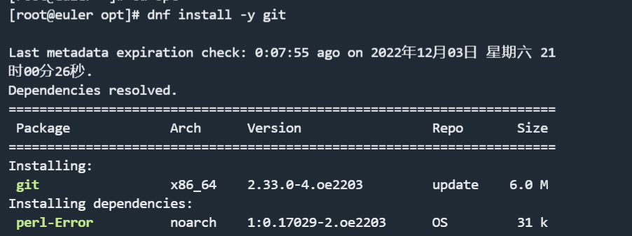
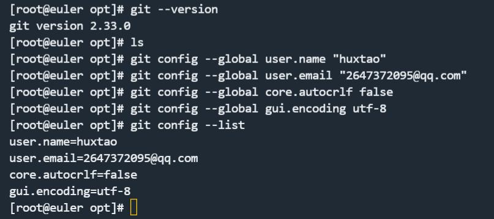
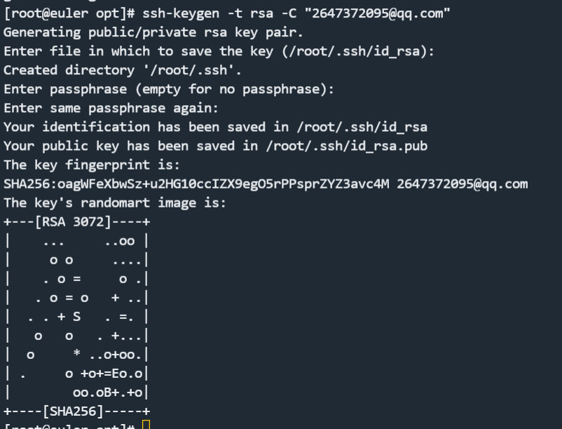
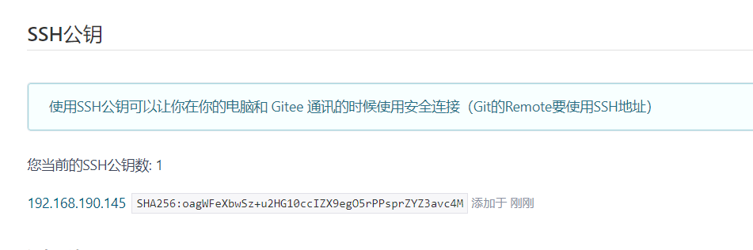
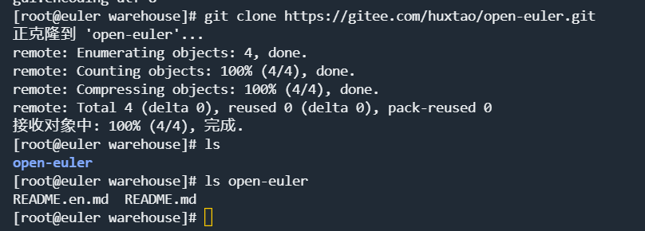
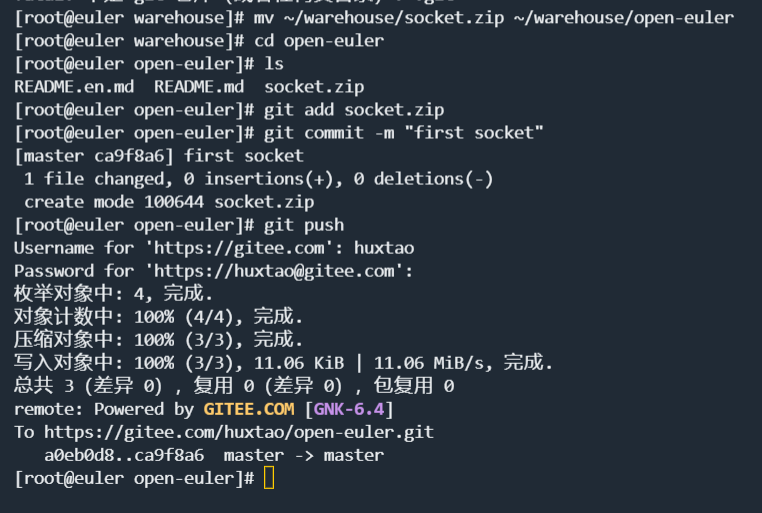
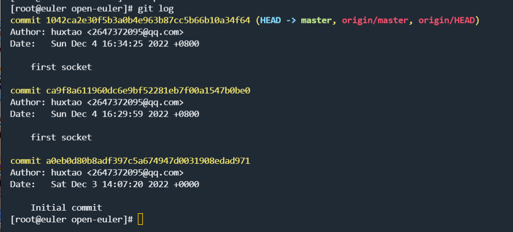
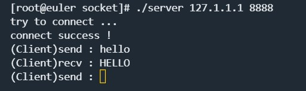
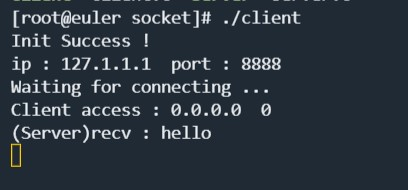

期末大作业
期末大作业（部分）
一、Linux中git的使用
1、安装git
#dnf install -y git

下面是一些常用的命令，在这里先记着
| 命令 | 功能 |
|---|---|
| git init | 在本地的当前目录里初始化git仓库 |
| git status | 查看当前仓库的状态 |
| git add -A | 增加目录中所有的文件到缓存区 |
| git commit -m “信息” | 将缓存区中更改提交到本地仓库 |
| git log | 查看当前版本之前的提交记录 |
2、查看版本-配置用户名邮箱编码

3、生成公私钥

4、添加公钥

5、克隆gitee仓库到linux

6、将编写好的socket上传到gitee

7、查看日志

二、编写socker
client.c部分代码
//给服务端的地址结构体赋值
serv_addr.sin_family = AF_INET;
serv_addr.sin_port = htons(SERV_PORT); //将主机上的小端字节序转换为网络传输的大端字节序（如果主机本身就是大端
字节序就不用转换了）
serv_addr.sin_addr.s_addr = inet_addr(SERV_IP); //将字符串形式的ip地址转换为点分十进制格式的ip地址
//绑定地址信息到监听套接字上，第二个参数强转是因为形参类型为sockaddr ，而实参类型是sockaddr_in 型的
if(bind(servfd,(sockaddr *)& serv_addr,sizeof(serv_addr)) == -1)
{
cout<<"bind failed : "<<strerror(errno)<<endl;
return 0;
}
//将servfd套接字置为监听状态
if(listen(servfd,1024) == -1)
{
cout<<"listen failed : "<<strerror(errno)<<endl;
return 0;
}
cout<<"Init Success ! "<<endl;
cout<<"ip : "<<inet_ntoa(serv_addr.sin_addr)<<" port : "<<ntohs(serv_addr.sin_port)<<endl;
cout<<"Waiting for connecting ... "<<endl;
socklen_t clit_size = 0; //用于accept函数中保存客户端的地址结构体大小
//accept成功后，clitfd则指向了这条服务端与客户端成功连接的”通路“
if((clitfd = accept(servfd,(sockaddr *)& clit_addr,&clit_size)) == -1)
{
cout<<"accept failed : "<<strerror(errno)<<endl;
return 0;
}
cout<<"Client access : "<<inet_ntoa(clit_addr.sin_addr)<<" "<<ntohs(clit_addr.sin_port)<<endl;
char buf[1024]; //用于读写数据
while(1)
{
int rdstate;
if((rdstate = read(clitfd,buf,sizeof(buf))) > 0 )//通过clitfd来读取数据，返回值为读取的长度
{
int i=0;
cout<<"(Server)recv : ";
for(i=0;i<rdstate;i++)
{
cout<<buf[i];
buf[i] = toupper(buf[i]); //转换为大写
}
buf[i]='\0';
cout<<endl;
write(clitfd,buf,strlen(buf)); //发回客户端
}
else if(rdstate == 0) //客户端退出
{
cout<<"client exit ! "<<endl;
return 0;
}
}
service.c部分代码
//通过套接字发起连接请求，成功后clitfd套接字则表示此次成功的连接
if( connect(clitfd,(struct sockaddr*)& serv_addr,sizeof(serv_addr)) == -1)
{
cout<<"connet failed : "<<strerror(errno)<<endl;
return 0;
}
cout<<"connect success !"<<endl;
while(1)
{
char sdbuf[1024];
char rvbuf[1024];
int rdlen,sdlen,i=0;
cout<<"(Client)send : ";
while((sdbuf[i] = getchar()) != '\n')i++;
if(i==0)continue; //防止客户端只发一个换行符，此时i=0，write不发送数据，服务端就不回回发数据，然后客>户端就一直阻塞在read处。因此如果i=0，则直接重新输入
sdlen = write(clitfd,sdbuf,i); //向套接字中写入数据发送
/*1. write了多少字节就读取多少字节长的字符串*/
rdlen=0;
while(rdlen<sdlen)//防止发送端将数据分开发送
{
int rdcnt = read(clitfd,&rvbuf[rdlen],sizeof(rvbuf));
if(rdcnt == -1)
{
perror(NULL);
continue;
}
rdlen+=rdcnt;
}
if(rdlen)
{
rvbuf[rdlen]='\0';
cout<<"(Client)recv : "<<rvbuf<<endl;
}
else
{
cout<<"Server has closed ! "<<endl;
cout<<"Client will close..."<<endl;
break;
}
实现通信

